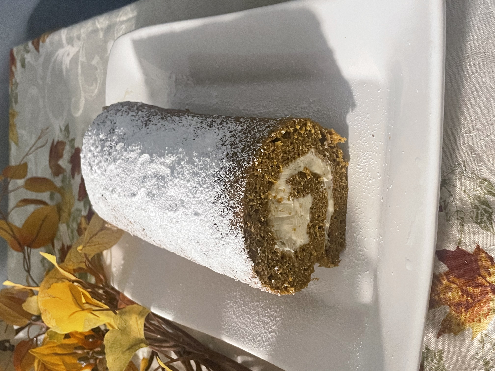

Hello, my name is Emely.
This is my creative statment.... so enjoy.💞
I am a second-year student at Hunter College, and I’m majoring in Media Studies concentrating in Journalism. My goal is to work in the book publishing industry; either as an Editor or a Publicist. If possible, I would love to become a full-time author.
Now why would that sort of career field interest me? Well, it’s because of reading. Reading has been something I have grown to love since I was young. Having a learning disability has been rough and it took me years before I could finally learn to read a proper sentence. However, the time and dedication I spent turned into a hobby that I spend hours dedicating myself to. That love for reading then turned to a love of creating short and full-length stories of my own. Creative writing has become a huge part of my life where not only do I work on my characters but a sort of escape from my worries in this world.
This summer has been all about growth, with that spiritual growth. As a born-again believer in Christ, I tend to trust in what God has in store for me, but also take the lessons I learn from God and incorporate them in my writing.

Now that I am entering a new life as a born-again believer, I try to focus more on the world than on devices and expand my creativity. Whether it’s just writing (and I mean writing on a piece of paper,) or creating things like crocheting or baking, inspiration is found everywhere.
 Yes, I made these both.
“Be on your guard; stand firm in the faith: be courageous; be strong. Do everything in love.” 1 Corinthians 16:13-14